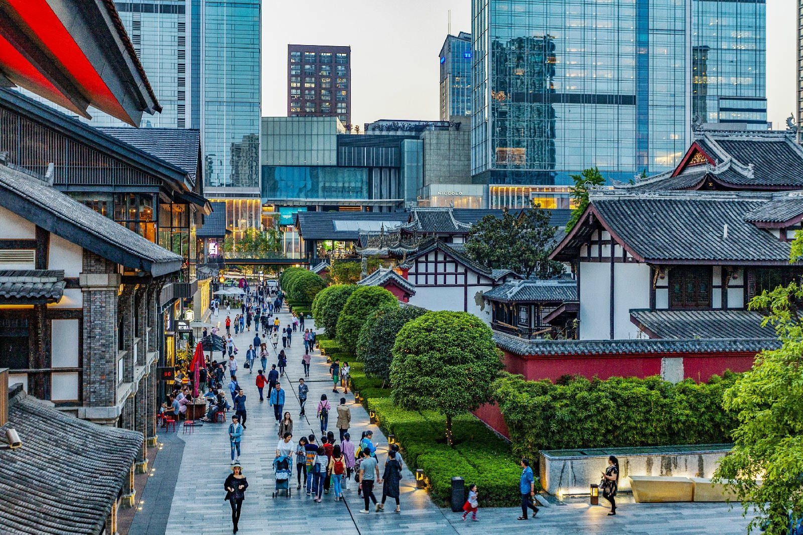

一帧光影，读懂一座城的古韵今风
三千年城名未改、城址未移，成都正以最从容的姿态与世界相遇
成都，简称"蓉"，别称"锦官城"，坐落于四川盆地西部、成都平原腹地，自古享有"天府之国"的美誉。 作为古蜀文明的重要发祥地，成都三千余年建城史从未中断，城名不改、城址不迁，是中国首批国家历史文化名城。 金沙遗址的太阳神鸟翱翔千年，武侯祠的松柏诉说着三国风云，杜甫草堂曾庇护诗圣的诗心， 宽窄巷子与锦里古街则将市井烟火铺陈得酣畅淋漓。麻辣鲜香的火锅与川菜是这座城市最热烈的心跳， 一碗盖碗茶、一段川剧变脸，便是最地道的"成都慢生活"。憨态可掬的大熊猫与世界文化遗产都江堰、青城山， 更让这里成为自然与人文交织的旅行胜地。今天的成都，融古老文脉与摩登时尚于一体， 正以开放包容的姿态迎接八方来客。锦水汤汤，蜀韵悠悠，我们在成都，恭候与您相遇。
—— 蜀韵·成都 敬上